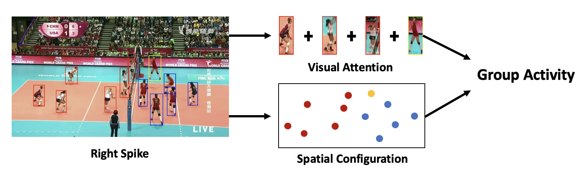
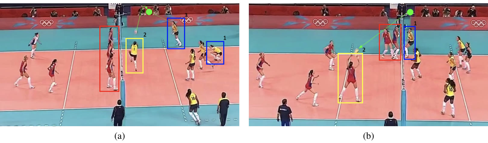
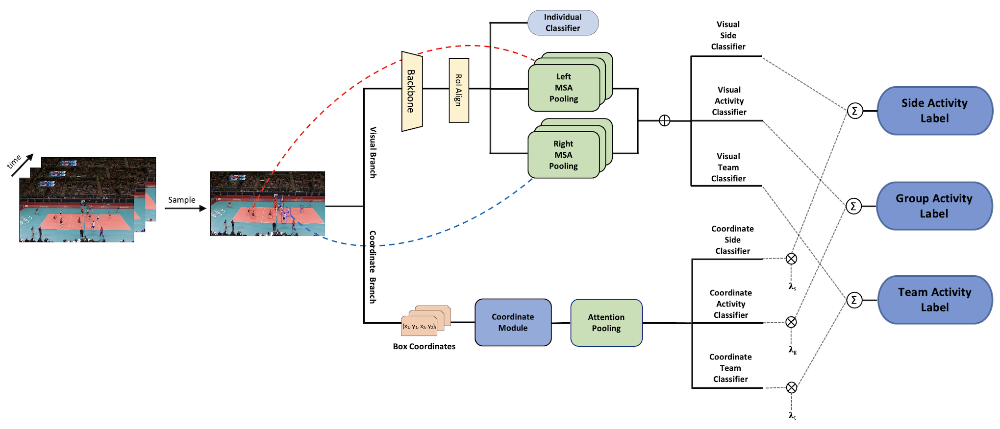

Group activity recognition models usually process whole clips, often adding optical flow or pose keypoints to RGB. DECOMPL drops temporal modeling: each prediction comes from one RGB frame plus the players' bounding boxes, and a clip's label is the plain average of its per-frame predictions. Along the way we found that the Volleyball benchmark often labels the main player's pose rather than the group's play, and re-annotated it with group-level labels. Without any temporal modeling, DECOMPL stays competitive with heavier methods, and apart from the backbone and embedding layers, which prior comparisons also leave out, it needs a fraction of their compute.
How much does time matter?
Group activity recognition (GAR) asks what a group of people is doing together in a short video clip. In volleyball, a label such as left spike or right pass describes the team, not any single player. Even when the decision hinges on one key player, that player's action only makes sense relative to the configuration and actions of everyone else on the court.
Most prior work models this jointly in space and time, with recurrent networks, relation modules, graph networks or transformers, and the strongest methods add optical flow, pose keypoints or ball trajectories. Each addition improves accuracy and adds computation.
We asked a simpler question. A player's pose and the arrangement of the players are static in a single image, yet they are known to be highly predictive of the action unfolding over time. So, conditioned on good spatial information, how much does GAR in volleyball actually lose if we drop the temporal dimension?

DECOMPL treats each frame independently. During training it samples one frame uniformly from the clip and predicts from that frame's visual and coordinate features alone. At test time it predicts every frame of the clip independently and averages the predictions. “Single image” therefore describes each prediction, not the clip: the final decision still draws on all of the clip's frames, but no frame gets extra weight and frames are never considered jointly, so there is no temporal modeling. There is also no optical flow, keypoint or pose input; the model sees the RGB frame and the players' boxes, which the Volleyball benchmark provides.
The labels described poses, not plays
Most of the GAR literature reports on the Volleyball dataset (VD). Looking closely, we noticed that many clips, especially set and pass, were labeled mostly by the pose of the main player. A clip was a pass if the main player was bumping, no matter where the ball went next. That reduces the task to pose recognition and loses the group concept the label is supposed to capture.
We re-annotated the dataset with group-level semantics. A spike sends the ball to the other side in a comfortable, attacking position. A ball returned defensively, or a touch by the first player after the opponent's last touch, is a pass. A set forwards the ball to the player who is going to spike it. Win-point and the left/right distinction had no systematic flaw, but we also fixed random errors such as side mismatches.

Of the 4821 clips that remain after dropping a few whose camera angle changes, we relabeled 497, about 10% of the dataset. Most changes follow from the group-level scheme; the rest fix random errors such as side mismatches.
Two branches

The visual branch looks at the players. A VGG backbone gives one feature per player box, the players are split into a left and a right team by position, and each team is summarized by attention pooling. Players on a court have no natural order, and a summary of the scene should let key players count more than the rest. Max pooling makes a hard selection and mean pooling weighs everyone equally; attention pooling, borrowed from multiple instance learning, learns how much each player contributes.
The coordinate branch never sees pixels. It reads only the players' boxes, compares every pair of players through the difference of their boxes, and pools the result into a summary of the formation. That alone carries a lot: in our ablations, the coordinate branch by itself reaches 73.5% group activity accuracy without looking at a single pixel.
Volleyball labels also have a mirror symmetry across the net, which DECOMPL turns into extra supervision. Besides the side-sensitive group activity (left spike), each clip gets a side label (left) and a sideless team activity (spike). Both branches predict all three, and their decisions are fused with learned weights: without visual information the model cannot tell players apart, and without coordinates it is blind to where they stand.
What we found
On the original labels, DECOMPL comes close to the best RGB-only method. Because those labels contain errors, we also re-ran the methods with public code on the corrected ones.
| Method | Input | Original | Corrected |
|---|---|---|---|
| SACRF | RGB | 90.7 | 92.8 |
| DIN | RGB | 93.6 | 94.3 |
| GroupFormer | RGB | 94.1 | 94.45 |
| COMPOSER | Keypoint | 94.6 | 96.26 |
| COMPOSER w/o ball | Keypoint | – | 94.39 |
| DECOMPL | RGB | 93.8 | 95.2 |
With corrected labels, DECOMPL is the best of the RGB-only methods. Only COMPOSER, which adds keypoints and ball trajectories, is higher, and without the ball it falls behind DECOMPL. Every method improves with the corrected labels, which is itself a sign that the original ones were holding the benchmark back, and DECOMPL gains more than the two strongest RGB-only baselines, DIN and GroupFormer.
On the Collective Activity dataset, a different setting with no team structure, DECOMPL is again the best RGB-only method and third overall, behind two methods that use keypoints or mixed inputs (paper Table 2).
Cost
Leaving out the backbone and embedding layers, as prior comparisons do, DECOMPL needs about a tenth of the FLOPs of the next-lightest method and has the fewest parameters (paper Table 4).
Ablations
| Variant | Accuracy |
|---|---|
| Coordinate module only (no pixels) | 73.5 |
| Without the coordinate module | 94.8 |
| Without the auxiliary losses | 94.7 |
| Max pooling instead of attention | 94.6 |
| Mean pooling instead of attention | 94.7 |
| DECOMPL | 95.2 |
Every component helps: removing the coordinate branch, the auxiliary side and team losses, or attention pooling each costs accuracy, and two attention heads work better than one (paper Table 6).
Where a single frame falls short
Activities defined by motion are ambiguous in one image, such as waiting versus moving in the Collective Activity dataset. The model also relies on given player boxes, and the team split and auxiliary labels exploit the structure of volleyball specifically. Within volleyball, though, most of the group activity signal is already in a single frame: who stands where, and how the key players are posed.
Technical details
Visual branch
A VGG backbone and RoI align give one feature per player box, projected to \(D = 128\) dimensions: \(X \in \mathbb{R}^{N \times D}\) with \(N = 12\) players. Sorting the players by the x-coordinate of their boxes splits them into a left and a right team. Each team gets its own multi-head attention pooling, giving \(X_l, X_r \in \mathbb{R}^D\), and the frame's visual feature \(X_{\text{visual}}\) is their concatenation. On the Collective Activity dataset, which has no team structure, a single attention-pooling block covers all players.
Attention pooling
We adopt the attention-based pooling from multiple instance learning (Ilse et al., 2018), which is trainable, permutation invariant, and weighs each player by their contribution. For embeddings \(X = \{x_1, \dots, x_N\}\),
where \(w \in \mathbb{R}^{L \times 1}\), \(V \in \mathbb{R}^{L \times D}\) and \(L\) is the hidden dimension. The coordinate branch uses this module as is; the visual branch stacks several heads and projects their outputs back to \(D\) dimensions.
Coordinate branch
The coordinate branch takes the box coordinates \(X_b \in \mathbb{R}^{N \times 4}\), sorts them from left to right, and forms the pairwise difference vectors between players, \(X_{pd} \in \mathbb{R}^{N \times N \times 4}\). A convolution with kernel size 4 and stride 4 maps each difference vector to a single number with shared weights, further convolutions extract higher-level structure, and a projection gives location features in \(\mathbb{R}^{N \times D}\). A single attention pooling over all players (no team split, since only relative positions matter here) yields \(X_{\text{coordinate}} \in \mathbb{R}^D\). This branch is independent of the visual features, so the two run concurrently.
Labels and loss
Each clip carries a side-sensitive group activity, a side label (left or right), a sideless team activity (pass, set, spike, win), and individual action labels. Individual actions are predicted from the per-player RoI features. Side, team activity and group activity are each predicted from both \(X_{\text{visual}}\) and \(X_{\text{coordinate}}\), and the two branches' decisions are fused with learnable weights \(\lambda_s, \lambda_g, \lambda_t\). The network is trained end to end on \(\mathcal{L}_{\text{individual}} + \mathcal{L}_{\text{group}} + \beta\,(\mathcal{L}_{\text{side}} + \mathcal{L}_{\text{team}})\), with \(\beta = 1\).
Citation
@article{demirel2023decompl,
title={DECOMPL: Decompositional Learning with Attention Pooling for Group Activity Recognition from a Single Volleyball Image},
author={Demirel, Berker and Ozkan, Huseyin},
journal={arXiv preprint arXiv:2303.06439},
year={2023}
}